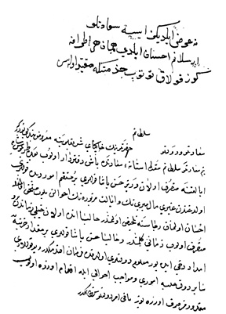

Belge 4: TKSA E.2457/10, veziriâzam ‘arzı
Belge 4
Veziriâzam arzı, özet:
Hasan Paşa’nın Trablusşam eyâletine atanması, hazineye para göndermiş.
Mevâcib işiyle yakından ilgi gösteriyoruz.
H. H. Vâlide Turhan Sultan’ın emri:
“Ne ‘arz eyledinizse sa’âdetlü Arslanım (IV. Mehmed) ihsan eyledi, hemân her etrâfa göz kulak tutub...”
Yorum:
Trablusşam eyâleti Suriye–Avrupa ticâretinde önemli bir limandı ve bol gelir getirmekteydi. Askere mevâcib işinin önde gelen bir sorun olduğu daima hatırda tutulmakta.